GAMES 202 L04 and L05 - Environment Mapping
An image representing infinitely distant lighting from all directions.
Shading from Environment Lighting (IBL)
To use the image to shade a point (without shadow), we need to solve the rendering equation. A General solution to solve this euqation is to use the Monte Carlo integration. It requires a large amount of samples so it can be really slow.
We notice that, in the rendering function, if the BRDF is glossy, the support is small; if the BRDF is diffuse, the support is large but it’s smooth.
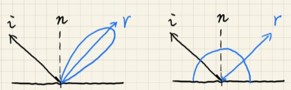
Recall the approximation:
Here, we can understand as a normalization (归一化).
This approximation is more accurate especially when
- Support is small (here “support” refers to the integral range 积分范围)
- g(x) is smooth enough (“smooth” does’t refer to “consistency” but means that the difference between the minimum and maximum value of g(x) in the integral range is not very large)
It’s obvious that BRDF (consider it as g(x)) satisfy the accuracy condition in both cases, so we can safely take the lighting term out.
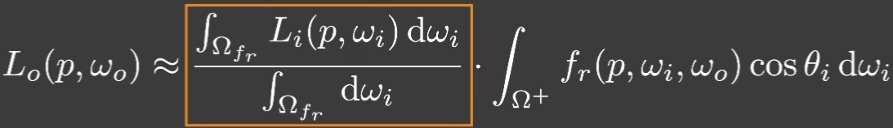
The Split Sum: 1st stage
- Prefiltering the environment lighting
- pre-generating a set of filtered env lighting (various filter size, think of mip-maps)
- filter size in-between can be approximated via trilinear interp
- query the prefiltered env lighting at the r (mirror reflected) direction
The Split Sum: 2nd stage
In the first stage, we figure out how to take the lighting term out, but the second term still requires integration. How can we avoid sampling the second term?
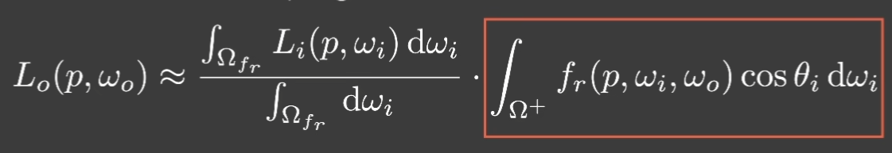
- Precompute its value for all possible combinations of variables: roughness, color(Fresnel term), etc.
- But we’ll need an extremely large table with high dimensions to store these combinations.
- So, continue to try to split the variables. The Schlick’s approximation of the Fresnel term is relatively easy (just the base color F_0 and and the half angle theta):
Thus, we can extract F term from the brdf function as shown below! In this way, we can only precompute the integrals of the other two terms.
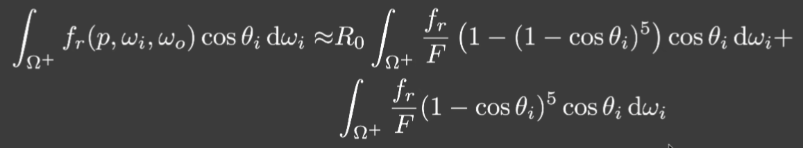
Each integral produces one value for each (roughness, incident angle) pair. Therefore, each integral results in a 2D table/texture. In fact we can store the two integrals in one texture in different channels (imagine the y-axis is BRDF value instead of roughness).
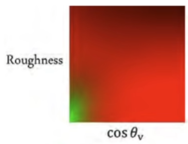
Finally, we avoid sampling (no sampling no noise!) and it’s very fast. And why we call this method “split-sum”? This is because we convert integrals in to sums.
Shadow from Environment Lighting
Difficulties and Solutions
-
As a many-light problem: Cost of SM is linearly to #light
-
As a sampling problem: Visibility term V can be arbitrarily complexAnd V cannot be easily separated from the environment
-
Industrial solution: Generate one (or a little bit more) SM from the brightest light source
-
Related research
- Imperfect shadow maps (https://jankautz.com/publications/ISM_SIGAsia08.pdf)
- Light cuts
- RTRT (might be the ultimate solution)
- Precomputed radiance transfer
Background Knowledge
Product integral
Any product integral can be considered as filtering.
Low frequency == smooth function/slow changes /etc.
The frequency of the integral is the lowest of any individual’s.
Basis Functions (基函数)
Basis functions are a set of functions that can represent other functions in general. As shown below, are basis functions and they form .
The Fourier series is a set of basis functions.
The polynomial series (多项式) can also be a set of basis functions.
Spherical Harmonics
- A set of 2D (theta and phi) basis functions defined on the sphere.
- Analogous to Fourier series in 1D.
- See the figure below, each l level corresponds to a specific frequency, and has 2*l + 1 SHs with that frequency. The first l+1 levels have n^2 SHs in total.
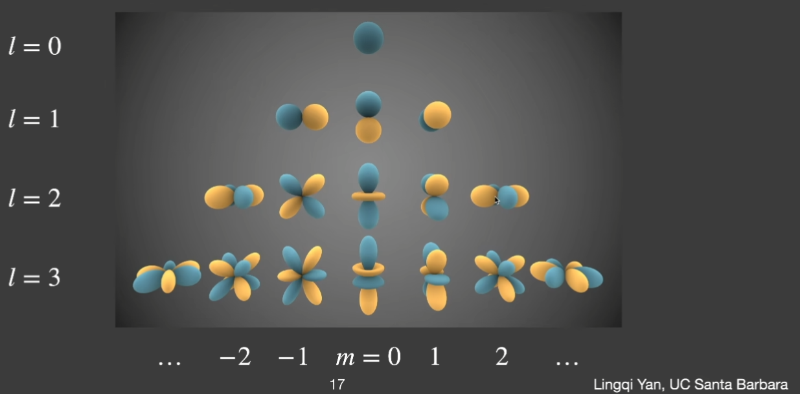
-
SH have nice properties:
- orthonormal: The result of projecting any basis function onto another basis function is 1, and the result of projecting it onto itself is 0.
- simple projection/reconstruction
- simple rotation: Any rotated SH can be represented by linear combination of other SHs at the same level
- simple convolution
- few basis functions: low freqs
- orthonormal: The result of projecting any basis function onto another basis function is 1, and the result of projecting it onto itself is 0.
-
Each SH basis function is associated with a (Legendre) polynomial.
-
Projection: obtaining the coefficients of each SH basis function, i.e., the in .
-
Reconstruction: restoring the original function using (truncated) coefficients and basis functions (using the first l+1 levels).
-
Recall the prefiltering process: Prefiltering + single query = no filtering + multiple queries
-
Diffuse BRDF acts like a low-pass filter (no high-frequency information), so we can describe it using only the first 3 levels of SH (for any illumination as long as the surface is diffuse).
The above are still only about env light shading.
Precomputed Radiance Transfer (PRT)
- Handles shadows and global illuminations
- Introduced by Sloan in SlGGRAPH 2002: Precomputed Radiance Transfer for Real-Time Rendering in Dynamic, Low-Frequency Lighting Environments [Sloan 02]
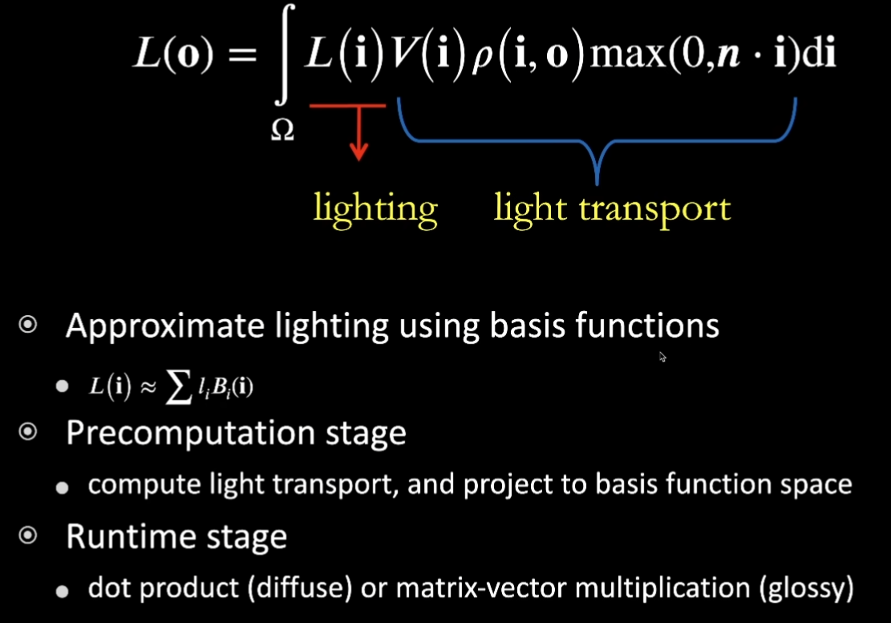
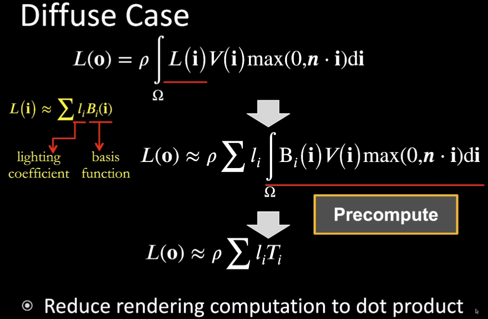
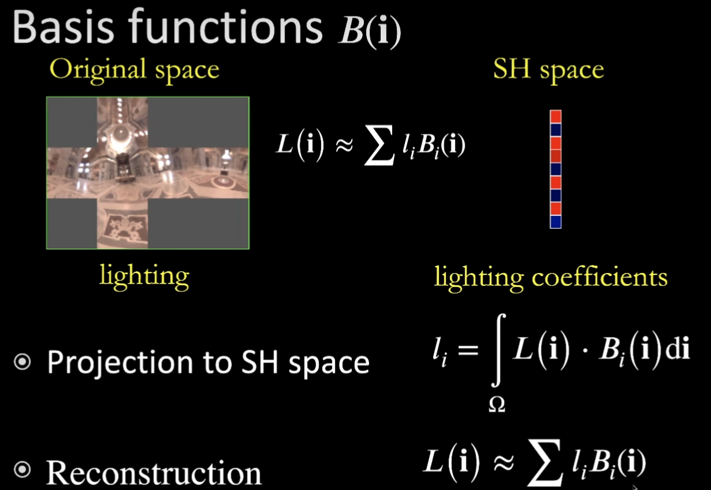
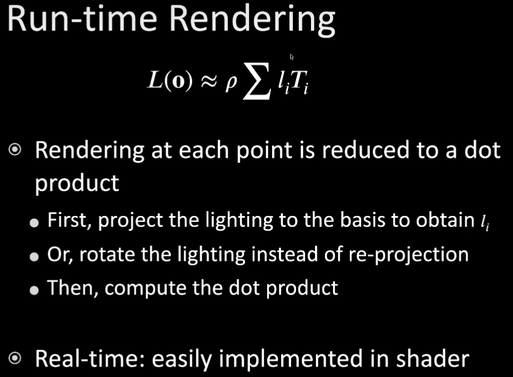
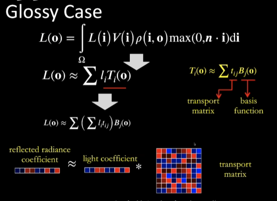
-
Time Complexity
- #SH Basis:9/16/25
- Diffuse Rendering At each point: dot-product of size 16
- Glossy Rendering At each point: vector(16)* matrix(16*16)
-
Summary of [Sloan 02]
- Approximate Lighting and light transportusing basis functions (SH)
- Lighting -> lighting coefficients
- light transport -> coefficients/matrices
- Precompute and store light transport
- Rendering reduced to:
- Diffuse: dot product
- Glossy: vector matrix multiplication
- Approximate Lighting and light transportusing basis functions (SH)
-
Limitations [Sloan 02]
- better used to describe Low-frequency (also works for high-frequency but not used in practice)
- Due to the nature of SH
- Dynamic lighting, but static scene/material
- Changing scene/material invalidates precomputed light transport
- Big precomputation data
- better used to describe Low-frequency (also works for high-frequency but not used in practice)
-
More basis functions
- SphericalHarmonics (SH)
- Wavelet
- Zonal Harmonics
- Spherical Gaussian (SG)
- Piecewise Constant